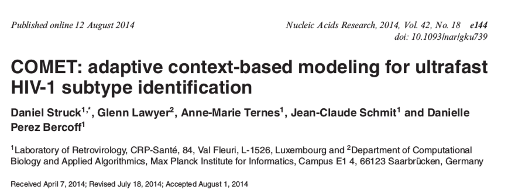

Alignment-free subtyping of HIV sequences
Mukarram Hossain
Department of Veterinary Medicine
University of Cambridge
MEPI group meeting, March 2017

Subtype classification
- Viruses are often grouped into subtypes.
- Subtypes have wide implications on the following studies of viruses:
- clinical
- epidemiological
- structural
- functional
- Existing classification techniques mostly rely on alignments followed by phylogenetic and/or statistical algorithms.
Alignment uncertainty
Alignment-free classification
- Lossless compression techniques have shown promising results for biological sequence classification:
- Protein family prediction (Begleiter et al., 2004)
- Protein structure prediction (Ferragina et al., 2007)

COMET
- COMET is an ultrafast alignment free subtyping tool
- Uses Prediction by Partial Matching (PPM)
- Initially designed for HIV-1
- COMET was tested on both synthetic (1090698) and clinical (10625) HIV datasets
- Sensitivity and specificity were comparable to or higher than:
- REGA (de Oliveira et al., 2005) and
- SCUEAL (Pond et al., 2009)
- Detected and identified new recombinant forms
COMET algorithm
- Builds variable-order Markov models for each reference sequence
- Given a query, COMET calculates log likelihood of observing a base at each positions
- This results in a matrix of likelihood values
- Subtype call is done using a decision tree
The decision tree

Lossless compression using ANN
- Schmidhuber and Heil (1996) presented 'Sequential neural text compression'
- Can have similar performance as PPM (MV Mahoney, 2000)
- The predictor network upon seeing a stream of input characters:
- assigns probability distribution for the next character
- Probabilities can be used in the same way COMET likelihoods work
Classification using Neural Networks
- Neural networks are computational system mimicking biological brain
- Consists of a cluster of neural units organised in layers
- All the neural units between layers are fully connected with weights attached
- Each neuron has activation function and a bias associated with them
ANN: design
- The input layer consists of 32 neurons getting values from the context
- Each nucleotide is represented by a one-hot vector
- A is [1,0,0,0] while T is [0,0,0,1]
- Hidden layer consists of N neurons
- processes inputs coming from the input layer using wights and biases
- Output layer consists of 4 neurons
- uses softmax funnction to generate probabilities for the Nucleotide bases A, C, G, T
ANN : implementation
- Based on the example code from the book 'Neural networks and deep learning' by Michael Nielsen
- Written in Python3
ANN: training
- We use the reference sequence set used in COMET to train the ANN
- Cross-validation is done using randomly removing one sequence from the training set for each subset
- Cross-entropy cost function is used to update network weights and biases
- Multiple epochs are used and the one producing best validation accuracy is stored
ANN: subtyping
- For each nucleotide positions in the query sequence:
- ANNs from each subtype generates probabilities of seeing the nucleotide given previous context
- The decision tree used in COMET is used to predict the subtype of the query sequence
Reference dataset

Cross-validation
Test datasets
- Reference (215 sequences)
- Vanderbilt (2779 sequences)
- PR-RT (727 sequences)
Accuracy comparison
Future direction
- Optimise neural network parameters
- Use
tanhfunction? - Larger context size?
- Recurrent Neural Networks (RNN)?
- Report breakpoints for potential novel recombinants
- Implement using TensorFlow
Acknowledgements
- Simon Frost
- Richard Dybowski